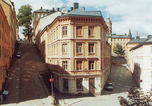

Södermalm i tid och rum. Stockholm

Bastugatan 1 (Brännkyrkagatan 10). Husets mellersta del mot Brännkyrkagatan uppfördes 1781 och tillbyggdes västerut 1867. Huset i övrigt uppfört 1883. Senast ombyggd 1972.

Bastugatan 1 (Brännkyrkagatan 10). Husets mellersta del mot Brännkyrkagatan uppfördes 1781 och tillbyggdes västerut 1867. Huset i övrigt uppfört 1883. Senast ombyggd 1972.